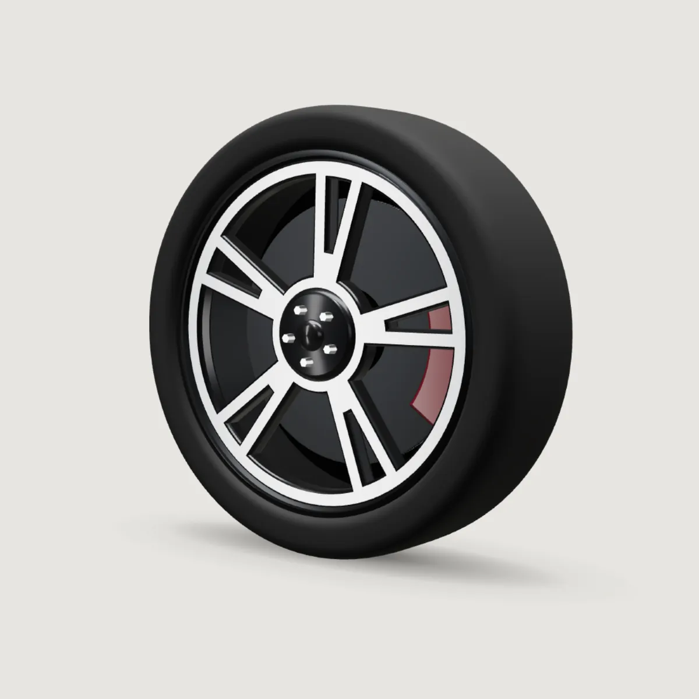
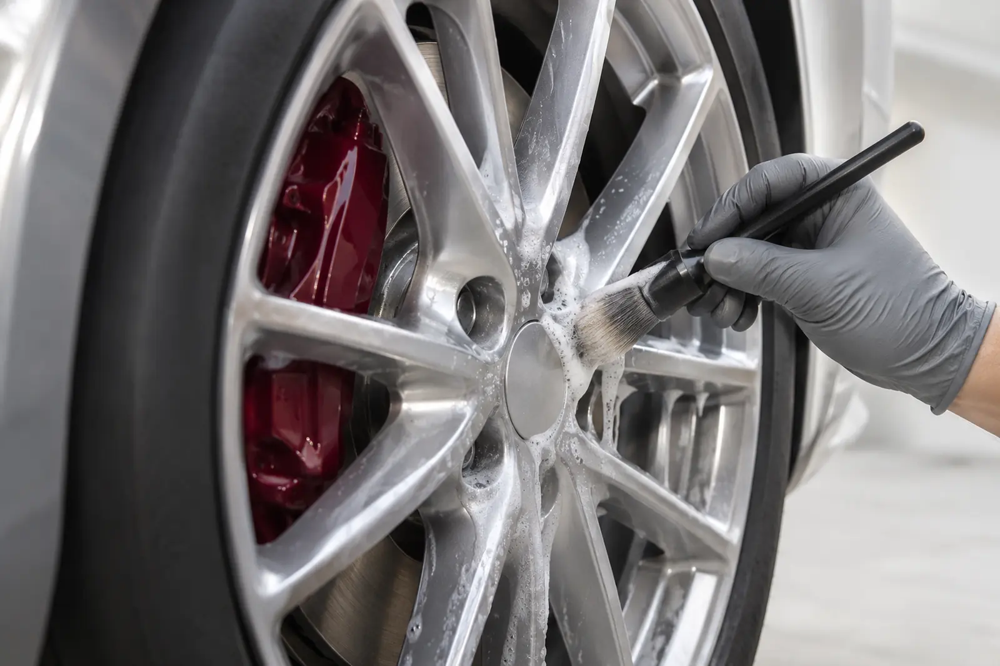
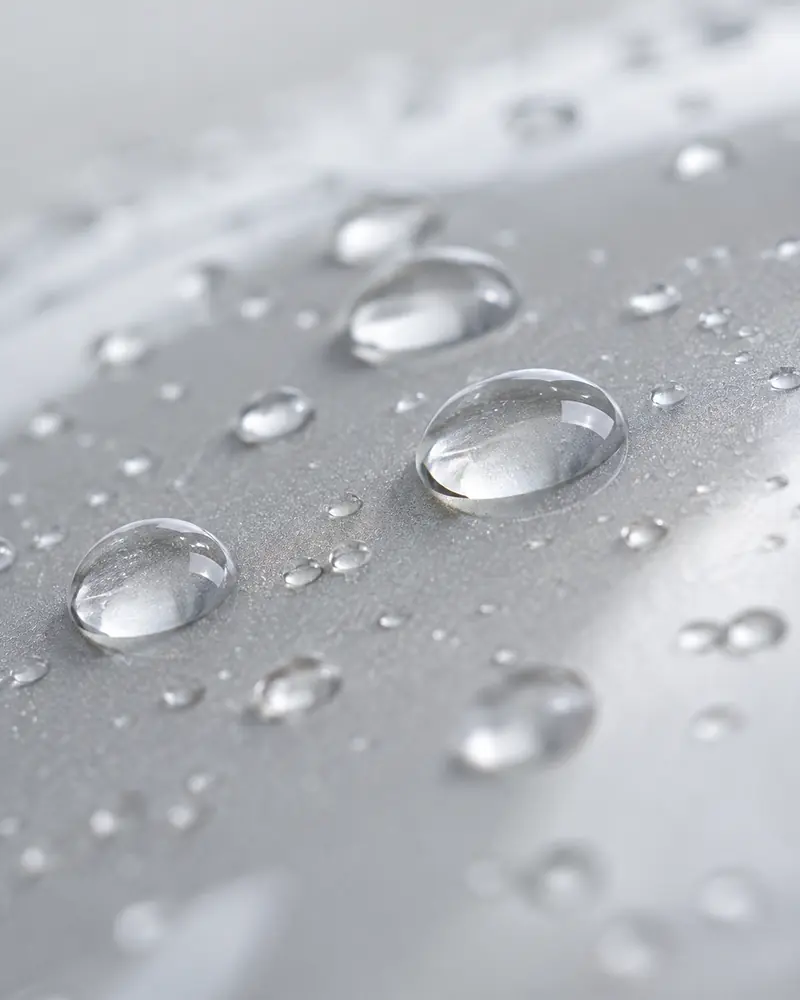
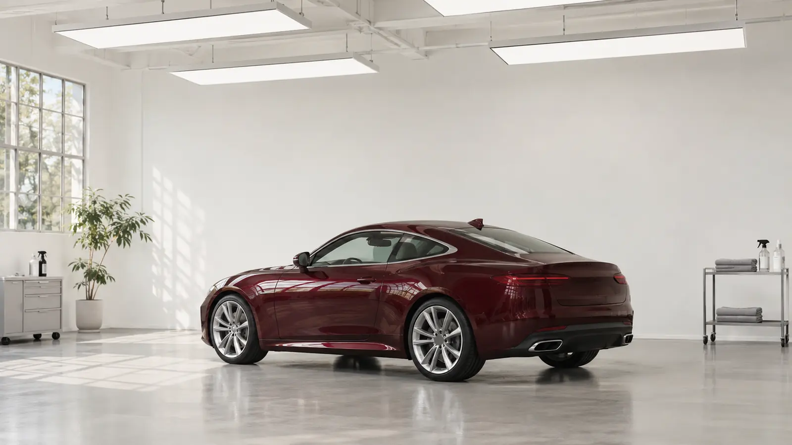
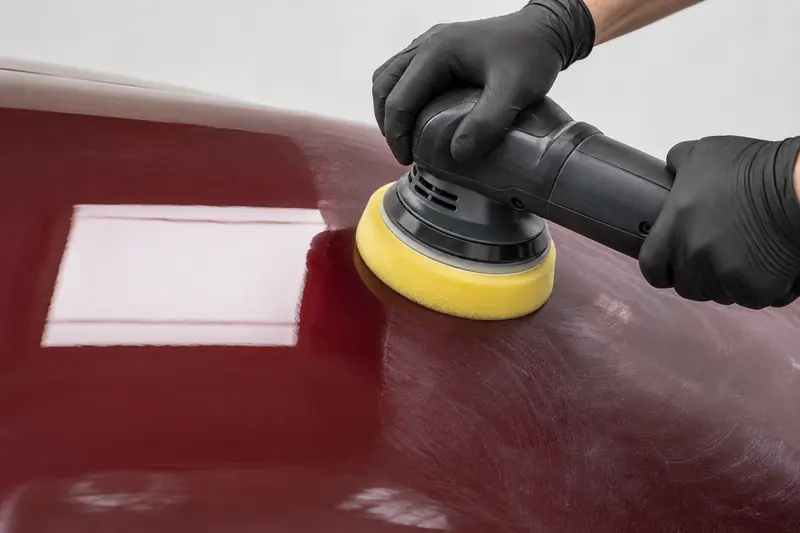
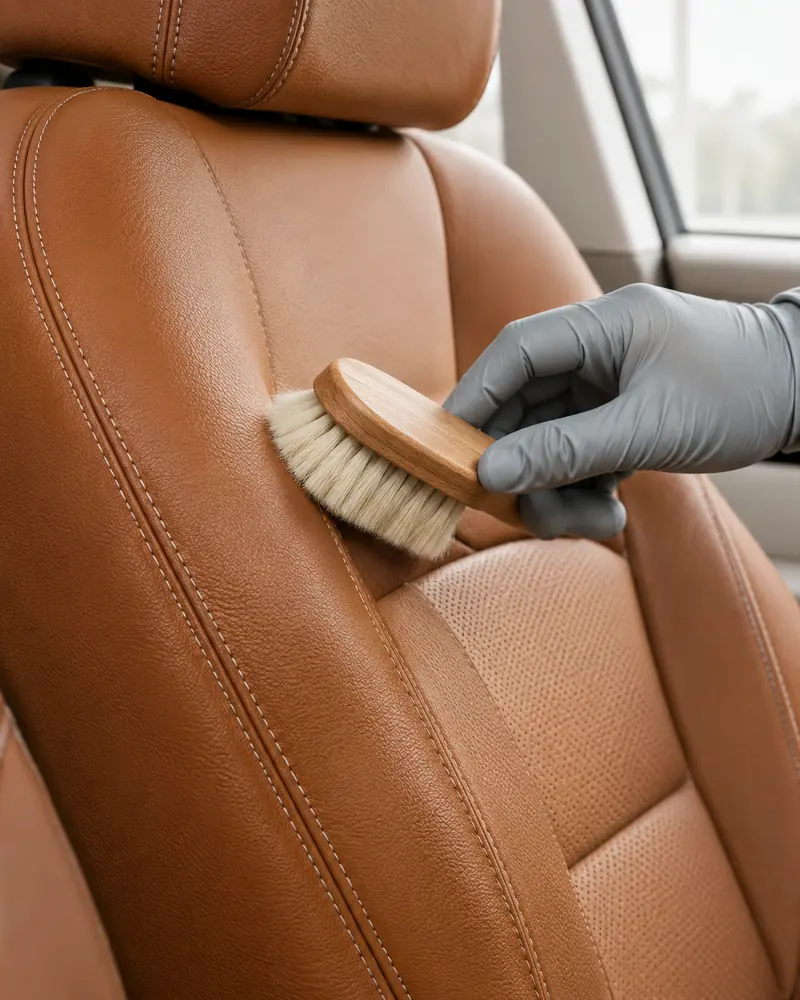
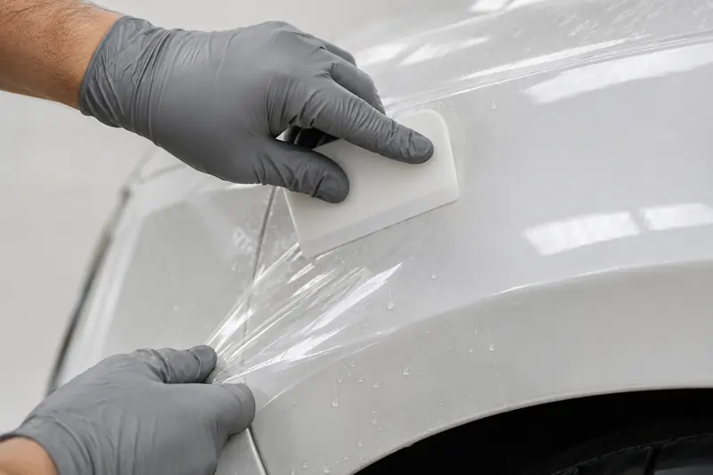

Detailing i powłoki ceramiczne w Rzeszowie
Korekta lakieru, ceramika i folia PPF. Cenę widzisz od razu w kalkulatorze, termin potwierdzamy w ciągu 24 godzin.

- Korekta lakieru
- od 650 zł
- Powłoka ceramiczna
- od 700 zł
- Gwarancja na powłokę
- do 36 miesięcy
- Godziny
- pn–pt 8–18, sob. 9–14
Cennik detailingu
Ceny „od” dotyczą małego auta z lakierem w dobrym stanie. Większe auto albo zmatowiony lakier podnosi cenę — dokładne widełki pokaże kalkulator.
Korekta lakieru
| Usługa | Na czym polega | Cena | Czas |
|---|---|---|---|
| Jednoetapowa | Jedno polerowanie. Usuwa ok. 60–70% hologramów i drobnych rys, przywraca połysk. | od 650 zł | 1–2 dni |
| Dwuetapowa | Cięcie i wykończenie. Usuwa ok. 80–90% defektów lakieru. | od 1 100 zł | 2–3 dni |
Powłoki i folia
| Usługa | Na czym polega | Cena | Czas |
|---|---|---|---|
| Powłoka ceramiczna, 1 rok | Jedna warstwa po myciu i odtłuszczeniu. Woda perli się i spływa, brud trzyma się słabiej. | od 700 zł | 1–2 dni |
| Powłoka ceramiczna, 3 lata | Baza i warstwa wierzchnia, twardsza i grubsza. Coroczny przegląd w studiu. | od 1 300 zł | 2–3 dni |
| Folia PPF, przód auta | Maska, zderzak, błotniki i lusterka. Przyjmuje uderzenia kamieni, drobne rysy znikają w cieple. | od 4 000 zł | 2–3 dni |
| Folia PPF, całe auto | Pełne oklejenie nadwozia, krawędzie zawinięte pod panele. | od 12 000 zł | 5–8 dni |
Wnętrze
| Usługa | Na czym polega | Cena | Czas |
|---|---|---|---|
| Detailing wnętrza | Odkurzanie, czyszczenie plastików, szyb i skóry, impregnacja. | od 450 zł | 1–2 dni |
| Pranie tapicerki | Fotele, kanapa i dywaniki: ekstrakcja i suszenie. | od 300 zł | 1 dzień |
Wycena online w 30 sekund
Trzy wybory i widzisz widełki ceny oraz czas pracy. Wynik dołączysz jednym kliknięciem do zapytania o termin.
Orientacyjnie
— zł
Cennik przykładowy. Dokładną cenę podajemy po obejrzeniu auta.
Jak wygląda wizyta
Od zapytania do odbioru auta. Przy powłoce ceramicznej całość trwa zwykle 2–3 dni.
Wycena i termin
Wysyłasz zapytanie z kalkulatora albo dzwonisz. W ciągu 24 godzin potwierdzamy termin i widełki ceny.
5 minut
Oględziny przy oddaniu
Mierzymy grubość lakieru, oglądamy go w świetle inspekcyjnym i ustalamy zakres. Cenę znasz, zanim zaczniemy.
15 minut
Mycie i dekontaminacja
Mycie ręczne, usunięcie smoły, opiłków żelaza i osadów glinką. Dopiero na czystym lakierze widać prawdziwe defekty.
3–4 godziny
Korekta i zabezpieczenie
Polerowanie w jednym lub dwóch etapach, odtłuszczenie, powłoka albo folia. Powłoka utwardza się przez noc w ciepłym pomieszczeniu.
1–2 dni
Odbiór i pielęgnacja
Pokazujemy efekt w świetle inspekcyjnym, dajemy kartę gwarancyjną i instrukcję mycia. Po 30 dniach zapraszamy na bezpłatną kontrolę.
20 minut
Powłoki i gwarancja
Gwarancja jest pisemna i zależy od regularnych przeglądów. Wartości są przykładowe — na stronie Twojego studia wpisujemy produkty, których naprawdę używasz.
| Zabezpieczenie | Warstwy | Deklarowana trwałość | Gwarancja | Warunek gwarancji |
|---|---|---|---|---|
| Powłoka ceramiczna, 1 rok | 1 warstwa | 12 miesięcy | 12 miesięcy | Bezpłatna kontrola po 6 miesiącach |
| Powłoka ceramiczna, 3 lata | baza i warstwa wierzchnia | 36 miesięcy | 36 miesięcy | Przegląd co 12 miesięcy, od 250 zł |
| Folia PPF | folia poliuretanowa ok. 0,2 mm | do 10 lat | 5 lat na żółknięcie i odklejanie | Mycie bez myjni szczotkowych |
Przy odbiorze dostajesz
- kartę gwarancyjną z datą, warstwami i terminem przeglądu,
- instrukcję mycia na pierwsze 7 dni i na co dzień,
- termin bezpłatnej kontroli po 30 dniach.
Realizacje
W przykładzie pokazujemy wizualizacje. Na stronie Twojego studia są tu zdjęcia Twoich aut — do 12 kadrów.






Zapytaj o termin
Odpowiadamy w ciągu 24 godzin z propozycją terminu. Wycena z kalkulatora dołącza się sama.
Dołączona wycena
Zapytanie przyjęte (przykład)
Dziękujemy.
To strona pokazowa, więc zapytanie nie trafiło do żadnego studia ani na żaden adres e-mail. Zapisaliśmy je tylko w tej przeglądarce.
Na stronie Twojego studia klient widzi tu potwierdzenie, a Ty dostajesz e-mail z danymi i wyceną.
Pytania przed wizytą
Najczęstsze pytania klientów przed pierwszą korektą lub powłoką.
Ile trwa nałożenie powłoki ceramicznej?
Od 1 do 3 dni. Większość czasu zajmuje mycie, dekontaminacja i korekta lakieru. Sama powłoka potrzebuje jeszcze kilku godzin w ciepłym pomieszczeniu, dlatego auto zwykle zostaje u nas na noc.
Czy powłoka ceramiczna usuwa rysy?
Nie. Powłoka zabezpiecza to, co jest pod nią. Rysy i hologramy usuwa korekta lakieru, dlatego przed powłoką oceniamy lakier miernikiem grubości i w świetle inspekcyjnym.
Kiedy mogę umyć auto po nałożeniu powłoki?
Po 7 dniach. Przez pierwszy tydzień powłoka twardnieje: unikaj mycia i chemii, a ptasie odchody zmywaj od razu wodą i miękką mikrofibrą.
Czy z powłoką mogę jeździć na myjnię automatyczną?
Odradzamy myjnie szczotkowe, bo robią rysy także na powłoce. Bezdotykowa myjnia jest w porządku. Najlepiej myć metodą dwóch wiader — instrukcję dostajesz przy odbiorze.
Czym różni się folia PPF od powłoki ceramicznej?
Folia PPF to warstwa ok. 0,2 mm, która przyjmuje uderzenia kamieni i drobne rysy. Powłoka ceramiczna jest cienka i chroni przed chemią, UV i brudem, ale nie przed odpryskami. Często łączymy oba: folia na przód, powłoka na resztę.
Czy cena z kalkulatora jest ostateczna?
To widełki. Dokładną cenę podajemy po obejrzeniu auta — na miejscu albo ze zdjęć. Jeśli lakier jest w lepszym stanie, niż zakładał kalkulator, płacisz mniej.
Jak przygotować auto do wizyty?
Wystarczy opróżnić bagażnik i schowki. Nie myj auta przed wizytą — myjemy sami, żeby ocenić lakier w czystym stanie.
Dojazd i godziny
Dane przykładowe — na stronie Twojego studia wpisujemy prawdziwy adres i numer.
ul. Przykładowa 1
35-000 Rzeszów
+48 17 000 00 00
Adres i numer są przykładowe.
Otwórz mapę w Google Maps (nowa karta; studio jest fikcyjne, link prowadzi do Rzeszowa)| Poniedziałek–piątek | – |
|---|---|
| Sobota | – |
| Niedziela | nieczynne |